您现在所处位置: 首页>新闻中心
国内的车联网元年是2009年，四年过去，车联网气势更胜，成为现在最火的关键词之一。 然而其发展步伐似乎也没有想象得那么快，仍处于江湖乱战的初级阶段。 似乎没人质疑车联网的光明前景，不同行业的企业争相加入，使整个产业链盘根错节。 相对于庞杂的后装市场，汽车厂家主导的前装市场（汽车出厂前安装车联网系统）相对紧凑， 也是车联网一个主要的讨论和推广阵地。 就现阶段而言，前装市场主要是汽车厂家在旗下车型搭载自家品牌的车联网系统，捆绑销售， 积累用户数量，培养用户习惯。这种努力圈地的方式在新技术发展前期的确必要， 但由于服务内容吸引力不足，商业模式不甚明朗，目前车联网主要是作为厂商销售的卖点 ，离车、人、路、网协调互联的目标还很远。
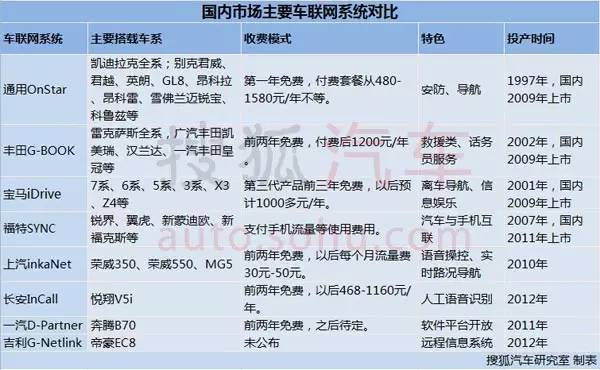目前在国内市场上，从进口、合资到自主，诸多车企都拥有自己的车联网产品， 达数十种之多，但人们经常讨论的却超不过十家。国际品牌主要有通用的OnStar， 丰田的G-BOOK，福特的SYNC和宝马的iDrive等，进入中国之前这些系统在国外 市场的发展已较为成熟 。而自主品牌起步较晚，目前比较有代表性的是上汽的 inkaNet，长安的incall， 吉利的G-NetLink和一汽的D-Partner等。
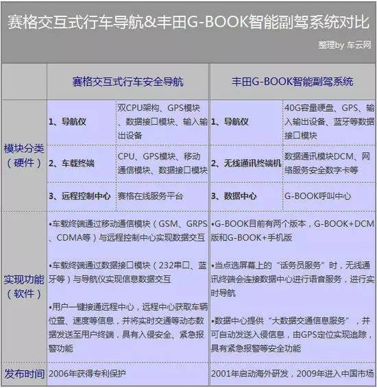作为把车联网带入中国的开拓者之一，丰田的智能副驾系统G-BOOK从雷克萨斯车 型入手，于2009年3月在国内上市。此时，前装车载信息服务在国内还是全新概念， 很多车主将其简单理解为一个智能导航。 其实G-BOOK与通用OnStar较为相似， 两者也经常被作为竞争对手而进行比较。G-BOOK的服务以救援类和信息咨询类为主 ，“紧急救援服务”、“道路救援服务”、“话务员服务”是其特色项目。同时 ，G-BOOK还提供了OnStar缺乏的G路径检索功能，能有效帮助用户避开交通拥堵路段， 带来不少便利。 2013年末，丰田G- BOOK遭遇了在国内的一次重大挫折，因为专利 侵权案可能面临退出中国的可能。七年前丰田打算和深圳赛格进行车载系统的技术合作 ，在丰田单方面终止合作后，引发了长达三年的专利侵权案。2013年12月20日， 一审判决深圳赛格导航胜诉，丰田侵权成立。 经此一役，尽管丰田中国公关宣传部负责人表示， “正在考虑上诉”，消费者目前可以继续放心使用G-BOOK系统，但G-BOOK未来在国内的发展前景难辨。
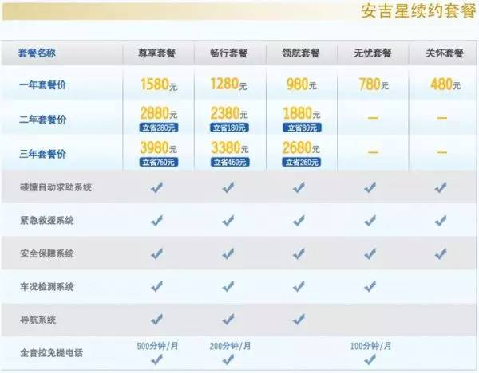中文名为安吉星的通用OnStar 系统1997年就已在美国上市，进入国内前已很成熟。 2009年底，OnStar系统搭载在凯迪拉克上进入国内，并在2010年别克车系的推广带动下， 发展势头加速。截至2013年10月，OnStar在中国的实际用户数突破64万，其知名度和 使用量在国内车联网领域保持领先位置。 OnStar的核心服务开发是围绕安防类进行的。 “碰撞求助服务”、“车门远程应急开启”、“路边救援协助”和“车况检测报告”等都是其主 推的核心功能。 对于车联网系统，业内有这样一个金字塔结构，即底层是提供安全、安防服务； 中间是信息服务，包括导航、股票、天气等信息；再往上是娱乐服务。上海安吉星副总经理于洋曾表示 ，安吉星选择从根基向上发展，主打对用户最有益的安全保障功能，娱乐等附加服务则不是宣传重点。 然而从使用频次来看，安防服务作为OnStar最大的优势和卖点，处境有些尴尬。 上海安吉星执行副总经理李超曾称，自2008年10月28日上海安吉星成立以来， 总共处理了2万车辆自动碰撞求助服务，而这个数字与2614万次导航服务相比微乎其微。 据称，上海安吉星从2013年开始实际盈利，但较低的使用率导致的是用户续费意愿的不足， 在一年免费期后，OnStar续费率低的问题不断被提及和讨论。OnStar不得不做出调整和改变。 上海安吉星已放出消息，2015年信息娱乐服务将被提高到和车辆安防类服务同等的位置。
中文名为安吉星的通用OnStar 系统1997年就已在美国上市，进入国内前已很成熟。 2009年底，OnStar系统搭载在凯迪拉克上进入国内，并在2010年别克车系的推广带动下， 发展势头加速。截至2013年10月，OnStar在中国的实际用户数突破64万，其知名度和 使用量在国内车联网领域保持领先位置。 OnStar的核心服务开发是围绕安防类进行的。 “碰撞求助服务”、“车门远程应急开启”、“路边救援协助”和“车况检测报告”等都是其主 推的核心功能。 对于车联网系统，业内有这样一个金字塔结构，即底层是提供安全、安防服务； 中间是信息服务，包括导航、股票、天气等信息；再往上是娱乐服务。上海安吉星副总经理于洋曾表示 ，安吉星选择从根基向上发展，主打对用户最有益的安全保障功能，娱乐等附加服务则不是宣传重点。 然而从使用频次来看，安防服务作为OnStar最大的优势和卖点，处境有些尴尬。 上海安吉星执行副总经理李超曾称，自2008年10月28日上海安吉星成立以来， 总共处理了2万车辆自动碰撞求助服务，而这个数字与2614万次导航服务相比微乎其微。 据称，上海安吉星从2013年开始实际盈利，但较低的使用率导致的是用户续费意愿的不足， 在一年免费期后，OnStar续费率低的问题不断被提及和讨论。OnStar不得不做出调整和改变。 上海安吉星已放出消息，2015年信息娱乐服务将被提高到和车辆安防类服务同等的位置。
宝马也是第一波开发车载智能系统的国际车企之一， 在2001年就推出了第一代iDrive系统，到2012年已升级为第三代， 并将互联网与移动终端技术作为发展核心，实现了与手机APP的互动。 在国内，宝马与中国联通联合推出了BMW互联驾驶科技。除了车辆远 程控制、全景泊车辅助系统、带自动启停功能的主动巡航系统、 以及车道偏离警告系统等，宝马对信息娱乐功能的开发也很重视。 从宝马官网上“信息娱乐，乐动旅途”的BMW互联驾驶科技宣传语就可看出。 据悉，这次合作，是内地运营商第一次以整体服务提供商的角色参与车厂前装车载信息服务项目。 除了与联通合作，宝马还通过与百度地图的合作，推出了支持互联网向车载终端发送位置信息的服务。 用户在电脑上使用百度地图查找目的地之后，可以直接将详细地址、电话等信息发送到汽车上。
在国外车联网系统的开拓之下，自主品牌车企也看到了车联网的前景， 开始竞相追逐。其中起跑最早的是上汽集团的inkaNet，占据了国内 自主品牌车联网系统的领先阵地。有数据显示，2010年上市的上汽 inkaNet到现在已积累了10万用户，在荣威350上的装载率达70%。 2013年10月，上汽第三代车联网系统inkaNet3.0上市，完全实现 了语音操控。而导航系统成为最大亮点之一，inkaNet3.0实现了真 正意义上的实时路况导航，系统每分钟下发一次实时路况，这对用户 来说是更为便利的一层体验。面对国际厂商的先发优势和其他自主品牌的追赶， 上汽集团对车联网有了更多的规划。首先，上汽车联网将由完全外包模式向分拆管控模式发展 。inkaNet开发前期采用了完全外包的模式，由中科博泰负责研发。 在实力日渐提升的前提下，上汽意识到对关键技术的掌控极为重要。 因此上汽计划分两步回收控制权，第一步要建立上汽管控平台的雏形， 第二步则要实现完全掌控。其次，上汽制定了打造车联网生态圈的基本方式， 集合各个行业内的力量，来共同发展车联网。鉴于车联网本身就是一个多方跨界的领域， 或许打造生态圈的方式，能更快地实现规范和发展。
除了上汽的inkaNet，其他自主品牌也纷纷跟进车联网。 2011年5月，一汽奔腾D-Partner系统搭载于奔腾B70上市； 2012年，长安InCall系统搭载于悦翔V5i，吉利G-Netlink系统搭载于帝豪EC8， 都相继上市。而奇瑞Telematics系统、比亚迪i系统、华晨汽车E-Drive系统等也在进行研发。 目前国内自主车企推出的车联网系统，基本原理大致相同，主要是实现远程连接， 为车辆提供实时路况及通讯等基本功能，同时提供其他多种交互及娱乐功能。 一汽D-Partner在国内率先采用Intel车载芯片并提供面向互联网的汽车信息服务， 本质上更像一台电脑，有本地硬盘、USB接口等等，能实现一般电脑的基本功能。 同时对软件平台完全开放，任何开发人员都可以为其开发软件。 吉利G-NetLink系统于2010年发布，但到2012年末才首次搭载在量产车型帝豪EC8上。 系统使用快捷键操作，内置3G语音及通讯模块，包括导航、上网、 “I-Call一键呼叫”和“E-Call紧急救援”等功能。同年上市的长安In Call系统则提供了二十多种功能， 可以通过人工语音识别，并建立了完整的呼叫服务中心，可通过“一键拨号”拨打至呼叫中心获得服务。
中国证券网讯记者12日从中国交通新闻网获悉， 日前，2016中国通信技术与车联网发展论坛暨车联网产业链合作研讨会在重庆召开， 会上启动了“筹建中国智慧交通车联网产业创新联盟”工作，联盟将围绕智慧交通建设和车联网产业发展， 整合交通、信息通信、金融等资源，促进跨领域、跨部门的产业深度融合。
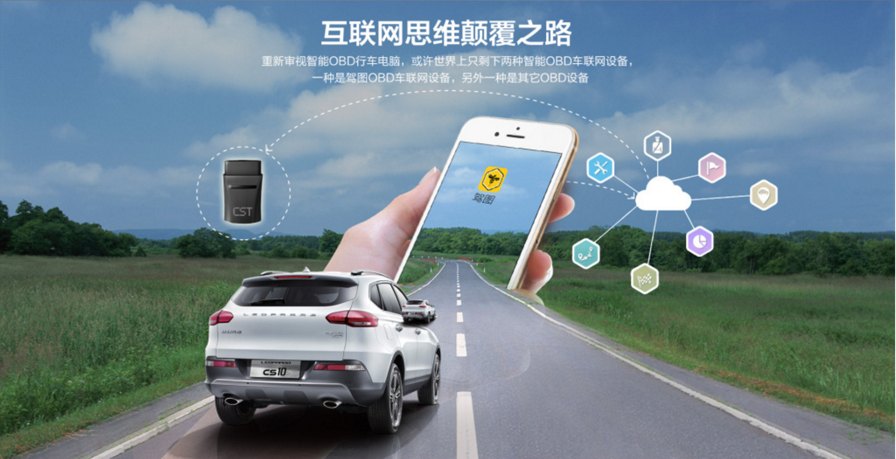今天上午，2016中国民营企业500强发布会在北京召开。榜单显示，华为控股有限公司以营收总额3590.09亿排名第一， 苏宁控股、山东魏桥集团分别以3502.88亿、3332.38亿分列二三位
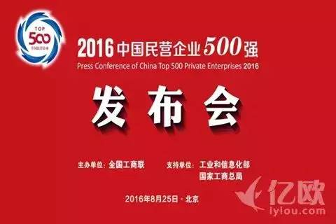今天上午，2016中国民营企业500强发布会在北京召开。榜单显示，华为控股有限公司以营收总额3590.09亿排名第一，苏宁控股、山东魏桥集团分别以3502.88亿、3332.38亿分列二三位。 联想、正威国际、大连万达、中国华信、恒力集团、江苏沙钢、万科，分列四至十位。 此外，全国工商联经济部部长谭林发布了《2016中国民营企业500强发布报告》。 报告显示，2015年，民营企业500强入围门槛达101.75亿元，比上年的95.09亿元净增6.66亿元。 2015年，民营企业500强资产总额为173004.87亿元，户均346.01亿元，增幅达25.16%。 从行业角度看，民营企业500强前10大行业，呈现出由传统产业向新兴产业调整的趋势， 其中，零售业入围的企业数量同比出现了减少。下面，亿欧将500强中19家零售业企业整理如下：
苏宁创立于1990年，员工18万人，在中国和日本拥有两家上市公司，下设苏宁云商，苏宁置业，苏宁金控，苏宁文创，苏宁体育和苏宁投资六大产业集团，形成商业、地产、金融、文创、体育、投资六大产业协同发展的格局。 其中，苏宁云商面对互联网、物联网、大数据时代，坚持零售本质，持续推进O2O变革，全品类经营，全渠道运营，全球化拓展等，目前，苏宁连锁网络覆盖海内外600多个城市， 拥有近1600家门店，其中，线上平台苏宁易购处于中国B2C市场前三。
京东于2004年正式涉足电商领域，2014年5月，京东集团在美国纳斯达克证券交易所正式挂牌上市；是中国第一个成功赴美上市的大型综合型电商平台；2015年7月，京东入选纳斯达克100指数和纳斯达克100平均加权指数。 截至目前，京东集团拥有近11万名正式员工，业务涉及电商、金融和技术三大领域。 目前，京东商城、京东到家、跨境电商、京东金融、京东技术是京东集团的五大部分。
三胞集团有限公司，是一家以信息化为特征、以现代服务业为基础的大型民营企业集团，以大数据为核心，构建“金融、健康、消费”三大产业，形成“金、木、水、火、土”五大行业协同发展的产业生态圈，努力成为有中国特色、可持续发展的世界级企业组织。 集团现拥有宏图高科、南京新百、万威国际、金鹏源康、富通电科等多家上市公司，以及宏图三胞、乐语通讯、宏图地产、广州金鹏、中国新闻周刊、麦考林、拉手网、商圈网、英国House of Fraser、美国Brookstone、以色列Natali等国内外重点企业，下属独资及控股企业超过100家，全球员工总数超过9万人，其中海外员工3万人。
新疆广汇实业投资（集团）有限责任公司创建于1989年，经过27年发展，形成了“能源开发、汽车服务、房产置业”三大产业。2015年，集团完成经营收入1053亿元，实现净利润34亿元，是西北地区唯一一家总资产、经营收入均突破千亿大关的民营企业，员工总数超过8万名。 在全面布局三大产业的同时，广汇集团还打造广汇男篮、广汇雪莲堂美术馆两大知名品牌。广汇男篮1999年成立，2002年进入中国男子篮球职业联赛（CBA）。
欧龙汽车集团成立于1995年2 月，由林建忠投资设立的全国无区域综合性汽车集团公司。业务范围涵盖机动车驾驶学校、新车销售、汽车维修、配件销售、二手车业务、汽车俱乐部、汽车衍生服务及机动车检测等完整汽车产业链的专业化汽车及汽车服务企业。 经过21年经营，欧龙集团现有奔驰、捷豹、路虎、克莱斯勒、道奇、JEEP、广汽菲克、一汽-大众、福特、雪佛兰、东风标致、东风雪铁龙等15个知名汽车品牌30余家品牌经营店，1家机动车检测服务中心及1家汽车驾培学校，产品覆盖面广，能够满足不同客户群体的需求，为浙南地区经营规模最大的汽车经销商集团之一。
红旗连锁创建于2000年6月22日。2010年6月9日，整体变更为成都红旗连锁股份有限公司。公司已发展成为中国西部地区最具规模的以连锁经营、物流配送、电子商务为一体的商业连锁企业，是中国A股市场首家便利连锁超市上市企业。 目前在四川省内已开设2400余家连锁超市，就业员工17000人，2015年上缴税收和社保超4亿元；拥有四座物流配送中心。
如今阿里、腾讯、Uber、百度甚至是乐视，都将自己的战略重心瞄向了新能源汽车领域， 甚至不惜任何代价，在国外建设工厂，在国内大肆讨好传统汽车品牌，欲在新能源兴风作浪。
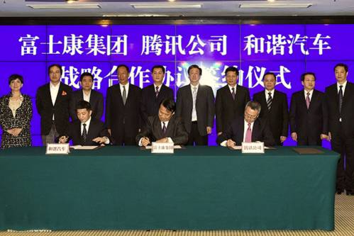今年3月腾讯联合了富士康、和谐汽车，三方将在河南省郑州市积极展开“互联网+ 智能电动车” 领域的创新合作。富士康称，三方将组成联合专业工作团队：腾讯将负责提供互联网开放平台，富士康聚焦在高科技移动终端与智能电动车整合的设计与生产制造技术上， 打造高效便捷、节能环保、安全可靠的“互联网+智能电动车”。
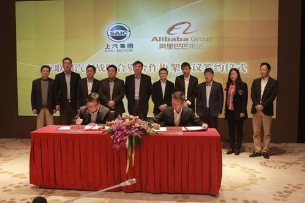阿里巴巴在三月份也宣布设立10 亿元的“互联网汽车基金”，通过众包的方式挖掘人才和用户需求，准备抢先造出国内第一款互联网汽车。此外，阿里除了和上汽合作外，另外还和力帆集团合作，力帆定向增发52亿元，打造电池-电机-电控-整车-充电设备一体化产业链布局。对于阿里来说，当智能电动车已经成为行业聚焦的一个市场，电商起家，资本雄厚并具备话题的阿里显然希望率先抢占有利地位。 对于互联网巨头来说，一旦发现新兴市场崭露头角，必将把触角伸入其中。腾讯此前已经在汽车领域有所布局，通过入股四维图新、推出腾讯路宝盒子、战略投资易车网等方式，储备了进入互联网汽车市场的战略资源。但是近日工信部拟修订的车企申请进入新能源车产业条件，这对于分时租赁企业无疑将成为一道难以跨越的门槛。在《意见稿》特别强调了整车控制系统技术的开发能力以及车载能源和驱动系统的集成、匹配能力，并相应增加或提高了设计计算、仿真分析、试验验证等方面的要求，控制系统的开发成了必要条件。在控制成本的基础下加强整车控制系统便是新能源分时租赁企业迈向新天地的“一条鸿沟”。BAT大佬们在新能源汽车领域是否“白折腾”了呢?
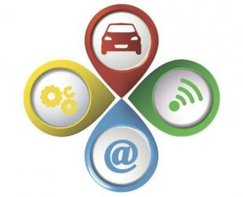笔者了解到车联网能够加强整车控制系统，车联网可通过车载智能一体机，实现人、车、物、路、客等全方位信息互通互联、调和统一，从而实现整车控制。让我们以叮叮宜维汽车租赁有限公司--运用车联网技术的新能源分时租赁企业为切口，来说车联网的具体作用。在2015年12月宜维汽车同智信通车联网服务商进行合作，比如说智信通Y07-多功能产品，给分时租赁企业汽车安装硬件+软件，为分时租赁企业搭建数据上传的云平台和客户端提供的手机APP，车辆的剩余电量、车辆状态、远程拦截车辆启动、位置监控等情况便会上传到企业云平台上，经过数据分析在传递为用户手机APP上，实现车辆的全方面实时监控，加强整车控制。 另一方面智信通车联网创新电动汽车商业模式，实现车人、车桩、车车、车路、车网等互联互通，节省人力、物力成本。通过给车辆安装车联网硬件+软件，能够准确显示车辆的动态运行状态，包括：速度、总里程、续航里程、点熄火状态、四门状态、车辆故障、超速告警及超速提示、疲劳驾驶提示等。系统全部是自动运营，可精准获知车辆轨迹、精准获知里程无须每个站点都配人员管理，降低运营人工成本。 智信通车联网解决了工信部拟《意见稿》之后新能源分时租赁企业的“绊脚石”--控制成本的基础下加强整车控制系统。新能源分时租赁从出世之后面临着政府扶持、企业看好的背景下，却在推进的过程中屡遭障碍，从企业面临高成本到国家工信部提出新能源汽车准入门槛提高，车联网总在新能源分时租赁最艰难的时候“出手相救”。有了智信通车联网专为新能源分时租赁企业提供的解决方案，BAT“大佬”进军新能源的道路上或许并没有那么坎坷。
OFweek物联网讯 一年一度的十一黄金周已落下帷幕，而对于大多数普通人而言，十一黄金周不仅是一次朋友圈的摄影大赛，还是一次对车技和耐心的考验。在五年后，车联网的普及或许会给我们的交通带来新的景象。 根据百度百科的定义，车联网（Internet of Vehicles）概念引申自物联网（Internet of Things），是以车内网、车际网和车载移动互联网网为基础，按照约定的通信协议和数据交互标准，在车-X（X：车、路、行人及互联网等）之间，进行无线通讯和信息交换的大系统网络，是能够实现智能化交通管理、智能动态信息服务和车辆智能化控制的一体化网络，是物联网技术在交通系统领域的典型应用。 通俗的解释，车联网就是车内局域网、车与车还有车与互联网，三位一体的网络格局。也是物联网的“先驱”，车联网的发展可能性，直接影响了未来物联网引用情况。
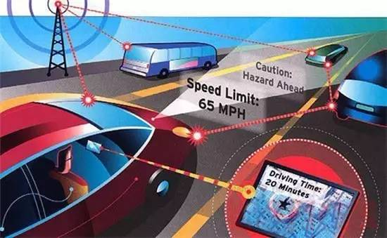Gartner研发总监James Hines表示：“互联汽车给汽车行业和许多其它垂直行业带来了机会，但也形成了威胁，联网汽车将继续呈现产品和服务方面的创新，催生新的公司，推动形成新的价值取向和业务模式，同时也将开创智能移动的新时代，在这个时代中，汽车行业的重心从汽车的个人所有转向更以服务为中心的个人移动。” 相关预测显示，未来五年将是车联网发展的快速增长期，产量预计到2016年将达到1240万辆，到2020年将达到6100万辆。 相比过去，现在汽车在行驶时往往需要手机地图，而车联网让道路的实时信息同步到服务器上，再手机终端中，让司机能够预知那条道路是最通畅的。 如果车联网能够与其他物联网相结合，那么我们就可以在汽车上搭载一个人工智能系统，汽车能够自动识别你喜欢的餐厅，定制你的行程。未来十年必将是物联网快速发展的十年，而车联网的普及，也将给我们的生活带来更多的优势。
百度当前所有的O2O业务，从打车、到酒店、在线旅游，车联网， 再到订餐等生活服务业务，无不依赖百度地图提供的过硬技术服务为用户提供良好使用体验。 今年百度Q3财报中一个最大亮点，是生活服务电商GMV达到602亿元大幅增长119%， 这是百度第二次在财报中公布GMV数字。在百度整体战略向O2O倾斜之后， 各项资源投出去发展新业务，生活服务方向的入口正在形成。而首先接受考验的 ，就是百度经营多年的基础设施服务，如百度地图，目前月活跃用户为3.26亿， 这是百度加速形成O2O入口的地基，也是贯穿一切业务线的筋骨。
百度地图至今发展十年，一直不断地在完善基础功能， 推出了持续提升体验的一个又一个功能，导航、路线规划、 实时公交、躲避拥堵、违章查询、停车场提示、全景地图等， 不断沉淀用户习惯。与此同时，百度地图在O2O方面的拓展也在加速进行中 ，百度地图今年5月初接入Uber专车服务，到6月末为止， 日均成单量已较刚接入服务时增长了21倍。 百度自营的顺风车业务接入地图之后也增长良好， 十一期间出现过最长400公里的跨城顺风车。在出行方面， 其他如4S店保养、加油站、汽车票等业务也以较快速度进行扩张。
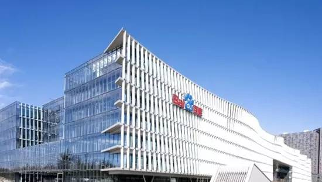Q3百度财报中，由去哪儿、百度糯米、百度外卖构成的高达602亿的GMV数字， 其实背后也有着地图的贡献。接入去哪儿的百度地图在今年“十一”期间推出 订酒店活动，其GMV达到活动前362%，总间夜量比2014年同期增长491%。 大理酒店节活动期间通过百度地图预订的酒店网络订单量占当地在线可预订 房源的一半。用户已逐渐习惯通过百度地图查找目的地并完成酒店预订，对 于百度地图中提供的景点门票及折扣团体游预订服务也非常欢迎。在百度主 导携程与去哪儿合并之后，后期百度地图还将接入携程，进一步提升地图的 入口作用。在餐饮娱乐类生活服务领域，接入地图的百度外卖也获得强资源支持， 糯米全业务系列接入百度地图后，在地图中提供了数万家餐厅和电影院的深度信 息餐饮及电影票在线预订。随着产
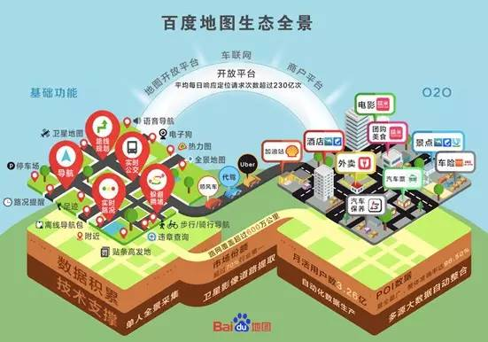百度在车品不断进化，未来会有更多O2O类的服务被集成到地图中去，并逐渐沉 淀用户习惯，百度地图将逐渐演变成一款超级app，用户打开一款软件即可完成导航、 餐饮预订、生活服务预订、电影票预订，打车等交易，这是个可见的预期。
百度GMV之所以能够实现如此高的增长，与百度地图过去在业务上的沉淀有很大关系。 定位与导航是出行服务和在线旅游的最根本技术保障，而在地图中沉淀许久的用户习惯， 在对接出行和在线旅游需求之后，获得了很好的转化。当百度在上季度决定公布GMV数字之后， 地图对于出行有关的业务导流作用愈发明显，已成百度O2O业务的增长源。 作为开放平台，百度地图还会被作为基础内核嵌入到诸多第三方app中， 平均每天响应定位请求次数超过230亿次，“十一”当天达到262亿次。接入百度地图服务的行业， 覆盖了出行、物流配送、上门服务、指挥交通、商业地产等行业。 百度的连接人与服务战略，着力点在于具体的O2O业务，但基于3600行的生态环境构建则是更重要的事。 百度地图为第三方提供的定位和导航服务，正是为完善这个生态所作出的努力。将3600行连接起来， 在地图这个平台上进行流动，对百度本身所从事的O2O业务也有助益，未来会形成平台化、入口化和生态化。
中国目前有近一亿个车主是百度地图的用户，占全部车主的七成。海量的行车数据被沉淀在百度地图中， 使得百度地图顺畅开展车联网业务成为可能。以百度地图为基础的车联网服务，是百度目前发展速度最 快的业务，自百度在9月百度世界大会发布了全新的车联网平台与生态布局之后，短短两个月时间就以 惊人的速度落地了一批车联网产品，在行业中处于领先地位。联网方面提供了四大解决方案，首先是应 用在北京现代新途胜、比亚迪“宋”、起亚H5等车型中的CarLife手机车机互联；其次是应用在比亚迪 “宋”等车型中的MyCar汽车私有云服务，此外还有CoDriver智能语音副驾和CarGuard汽车卫士两种辅 助解决方案，加速开发给车主带来智能体验的车联网系统。除了正向直接开拓O2O服务之外，通过构建 车联网服务平台建设生态圈，并形成O2O入口，是O2O战略的另一只脚。车联网在发展成熟之后， 可以接入各种线下服务。车联网是从另一个方向进入O2O服务的入口，未来发展成熟之后， 可与正面开拓的O2O业务实现会师，形成一个体系多元化的完整O2O服务生态。 百度的无人驾驶技术也在发展中，因为百度是国内唯一可提供高精度地图的公司， 有能力也有实力进行相关技术研发并将其落地实施。去年百度曾投资芬兰室内导航技术公司IndoorAtlas， 也曾投资技术型现象级公司Uber，对技术的不懈追求，使得百度地图成为一款含有较高技术含量的产品， 筑起了技术护城河，竞争对手很难超越。 拥有庞大用户量和压倒性市场份额的百度地图， 是百度O2O战略攻城略地的保障，也是构筑未来百度O2O入口的基础设施。 百度当前所有的O2O业务，从打车、到酒店、在线旅游，车联网，再到订餐等生活服务业务， 无不依赖百度地图提供的过硬技术服务为用户提供良好使用体验。地图是连接百度O2O业务的纽带， 也是推动O2O全线业务向前发展的驱动引擎，正在给行进中的百度O2O业务提供坚实的保障。
360车联网总裁邓邱伟在发布会上宣布，360将为滴滴专车装备360行车记录仪;此外， 由360针对旗下车载硬件开发的360 OS for Car也将向滴滴用户开放。 今天，360与滴滴在360大厦召开了主题为“打造出行安全新标杆”的发布会， 正式确立了360与滴滴的合作关系。笔者以为，这是继2015年推出行车记录仪后， 360在车联网领域的另一重大布局。
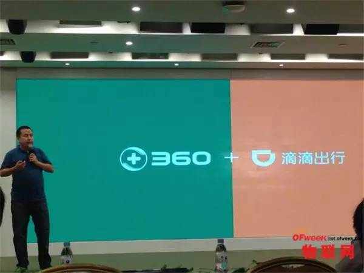360车辆网总裁邓邱伟在发布会上宣布，360将为滴滴专车装备360行车记录仪;此外， 由360针对旗下车载硬件开发的360 OS for Car也将向滴滴用户开放。从邓邱伟在 发布会现场的态度能看出，为滴滴专车装配360行车记录仪可能只是个开始，接下来 很有可能会是快车、顺风车……
那么，此次与滴滴合作，360行车记录仪会新增多少用户?虽然暂时滴滴未公布旗下汽车数量 ，但从其它维度也可见端倪。今年第二季度，滴滴出行发布了《2015-2016年移动出行就业促进报告》 。《报告》显示，截至今年4月，滴滴平台上的专快车、顺风车、代驾的司机人数已超过1330万。 而且值得注意的是，当时滴滴尚未收购Uber。也就是说，保守估计，滴滴行车数量至少在千万的数量级。
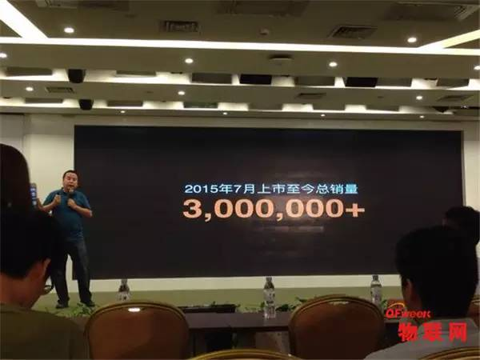百度的产品是百度Carlife，也就是所谓的以车机为载体，令汽车与手机互联; 阿里借助YunOS，针对车机(车载导航)环境，发布了YunOS for Car; 腾讯则是二者兼备，推出车辆ROM以及车联APP，在手机端与系统同时布局。 而也就是在稍晚的2015年，360发布了第一款车载智能硬件——360行车记录仪
显然不是，这一切有着明显的预谋的痕迹。 把时间拨回到2014年，当时的BAT分别拥有百度地图、阿里YunOS、 微信与QQ的社交基因等能在车联网领域发挥的优势，且财大气粗与众多汽车厂商直接达成了合作关系。 在车联网领域尚不明朗的彼时，投入大笔资金绝非360的最佳选择。 因此笔者判断，360最初发布行车记录仪，属于“明修栈道、暗度陈仓” ，避免与BAT直接在车联网领域短兵相接。而此次360 OS for Car的顺势推出， 更加表明了360进军车联网领域的意图与决心。
用户基数喜人、布局初显成效，但360能否在车联网领域立足，最终仍然是要落脚到产品层面。 360 OS for Car是360对车联网的解决方案，即360的车联网产品。依照邓邱伟在发布会 上的讲解，360 OS for Car以安全、智能、开放作为最大的三个卖点。 其中，安全主要体现在对车辆及车主的监管;智能体现在路况分析、 语音交互、辅助驾驶、手势操控等方面;开放则是支持第三方APP的深度合作、 支持第三方硬件适配且兼容其它车载产品。
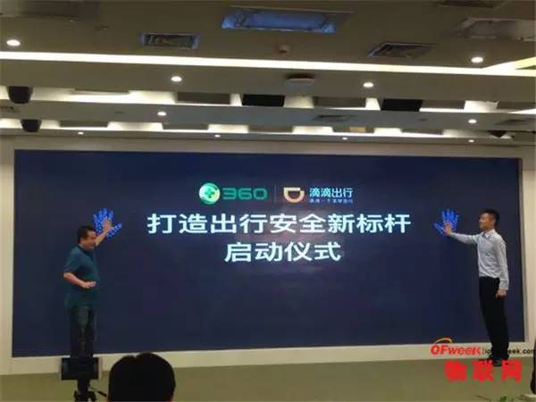从目前透露的信息来看，尚无法断定360 OS for Car的产品属性;但其设计方向已初步暴露—— 我们甚至可以将其称为，车联网领域的MIUI。而该系统中最有可能成为引爆点的功能， 在于智能。也就是说，只有当360 OS for Car的AI技术超越其它厂商时，才有可能杀出BAT的围剿。 其实，作为一个多年来被传统汽车导航系统，传统的中控系统所虐待的人，笔者也由衷希望汽车能和人 一样智能，比如真的能听懂我需求的中控导航，行车记录仪与中控联动躲避危险的辅助驾驶功能， 记录仪防碰瓷自动报警等等等等。 现在看来，360有这个机会成为车联网领域的重要参与者，而至于长久的布局能否成功， 与友商竞争胜算几何，且待360 OS for Car正式上线再见分晓。